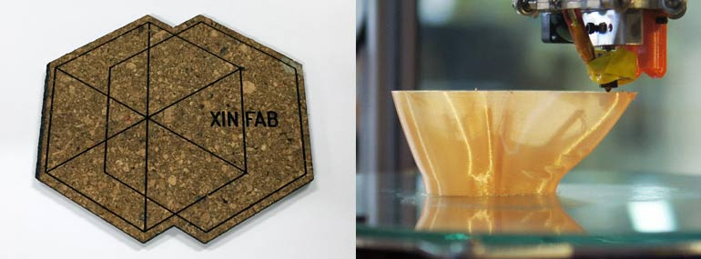
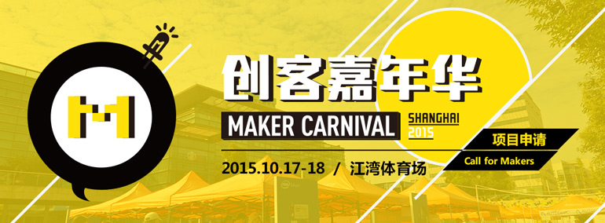
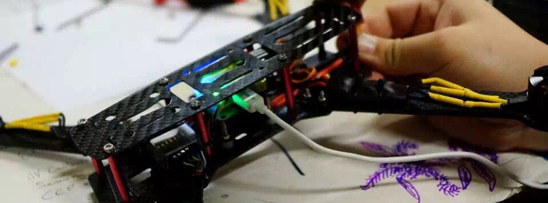
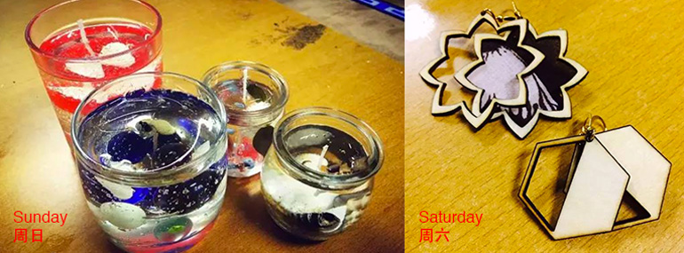
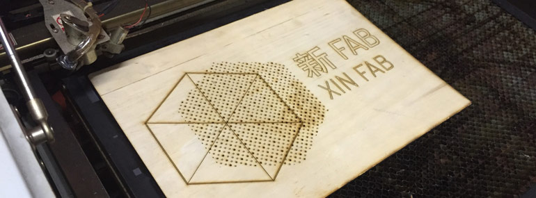
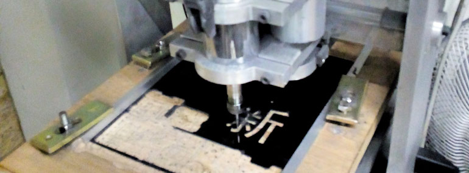
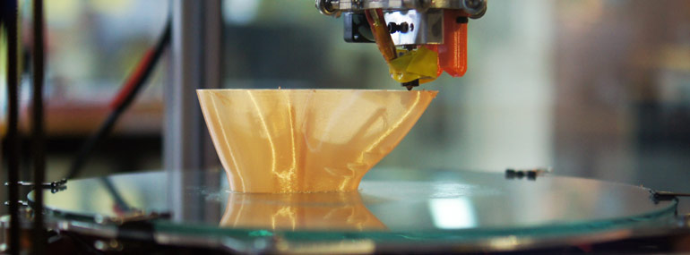
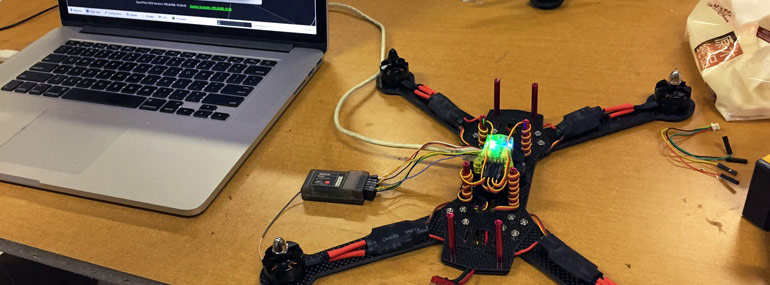
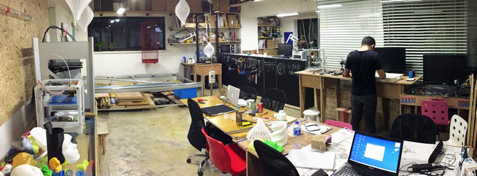
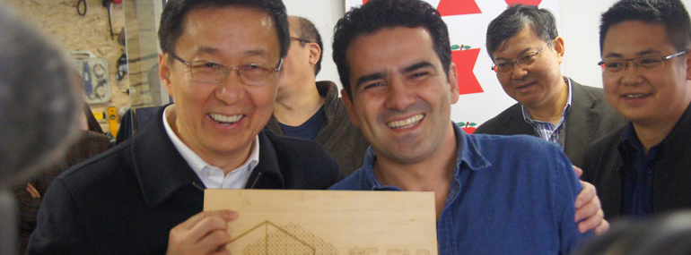

HOME
10月31日， 介绍激光切割机：自制杯垫！
Oct. 31， Intro to Lasercutting: Make Your Own Coaster
11月01日，3D打印入门初级课程
Nov. 01,
Intro to 3D Printing

了解如何使用激光切割机！在本次工作坊中，你将学会使用激光切割机制作自己的杯垫。没有任何基础也可以参加哦！:)
时间：10月31号 周六 下午13:00 - 16:00
地点：上海市静安区愚园东路28号三号楼一楼创客中心XinFab
费用：200元 （新Fab或新车间会员价150元)
请携带:
- 你的笔记本电脑，并安装Adobe Illustrator（免费试用版也可以哦！）
-
把自己喜欢的图片放在U盘或者笔记本上 （按照你的图片来雕刻自己的杯垫）
工作坊计划
这场工作坊会分成两步：
1.
用Adobe Illustrator去设计或者修改现有的图案（1 - 2小时）
2.
学会如何操作激光切割机和激光切割机的软件
你在工作坊一共会做四个杯垫！如果想多做几个杯垫，需要额外支付材料费用（工作坊费只包括四个杯垫的费用）。
*如果你还不会使用Adobe Illustrator, 只要把图片放在U盘里就可以了！
Learn how to use a laser cutter! In this workshop, you'll engrave and cut your own coasters. No previous experience necessary :)
When: Saturday, 10/31 from 13:00 to 16:00
Where: 上海市静安区愚园东路28号三号楼一楼 创客中心 XinFab
Cost: RMB 200, or RMB 150 for Xinchejian and Xinfab members
What to bring:
-
Laptop with Adobe Illustrator installed (free trial downloadable here:https://creative.adobe.com/products/download/illustrator) OR
-
Some JPG images on a USB or laptop.
WORKSHOP DETAILS:
The workshop will be divided into 2 parts:
1.
Designing / editing existing patterns with Adobe Illustrator (1-2 hours)
2.
Learn how to operate the lasercutter and the lasercutter software.
By the end of the workshop, you will have cut 4 coasters with the lasercutter (if you want to cut more you will have to pay for these separately.)
*If you don’t know how to use Adobe Illustrator, you can also bring a USB with a graphic design or logo .JPG file
**************************
3D打印入门初级课程
学习怎样用3D打印你的想象力！在这个工作坊中，你将会学习如何使用Cura打印网络上下载的3D模型。如果你从来没有使用过3D打印机，这将会是极好的入门课！
主讲：新Fab老鸟，蛋糕爱好者 Sean
时间：11月1日 周日 下午14:00 – 17:00
地点：上海市静安区愚园东路28号三号楼一楼 创客中心 XinFab
费用：200元（新Fab或新车间会员价150元）
请携带:
- 你的笔记本电脑，并安装Cura (https://ultimaker.com/en/products/cura-software/ 请复制到浏览器打开)
-
笔记本充电器
Intro to 3D Printing!
featuring: XinFab veteran and Cake Enthusiast Sean
Learn how to 3D print your ideas! In this workshop, you'll learn how to print 3D models from the internet using Cura. If you've never worked with 3D printers before, this is a good place to start :)
When: Sunday, 11/1 14:00 – 17:00
Where: 上海市静安区愚园东路28号三号楼一楼 创客中心 XinFab
Cost: RMB 200, or RMB 150 for Xinchejian and Xinfab members
What to bring:
- laptop with Cura preinstalled (https://ultimaker.com/en/products/cura-software/ Please copy paste to a browser to open the link)
-
laptop charger
Oct. 17-18 Xinfab at the maker carnival! 这周末是上海创客嘉年华

这是每年庆祝创客文化的活动，各种各样的公司和组织（如新Fab)会聚在一起，展示自己的项目，工作坊等等。欢迎大家来参观！
时间：10月17日-18日，上午10点到下午5点
地点：上海市杨浦区淞沪路234号 （江湾体育场）
门票：40元
This weekend is the SHANGHAI MAKER CARNIVAL!
This is a yearly celebration of maker culture where different companies and organizations (ex: Xinfab) come together and showcase projects, teach workshops, and more. Come visit our booth!
When: October 17 - 18th, 10:00 - 17:00
Where: 上海市杨浦区淞沪路234号 (Jiangwan Stadium)
Ticket: 40RMB
For more information about the Shanghai Maker Carnival, click here.
Because we will be at the maker carnival there are limited opening hours at xinfab itself, if you want to come and work please sent us a message by email to confirm.
Sept. 29 - Oct. 10 limited opening hours at Xinfab!
Due to National day from Oct 1 till 7 and staff holidays we will have limited opening hours from Sept 29 - Oct. 10.
If you want to come and work at xinfab please sent us a message by email to confirm
Sept 26th, DIY四轴飞行器 Racing Quadcopter Workshop with Lucio!

DIY四轴飞行器工作坊
主讲：新Fab的创始人(!!!)，鲁修
时间：9月26日 周六 下午13:00 – 21:00
地点：上海市静安区愚园东路28号三号楼一楼 创客中心 XinFab
费用：2200元
看天空！ 是鸟？ 是超人？ ------ 非也！此物为无人机！这个工作坊中，你将学会建造自己的四轴飞行器！
工作坊费用明细如下：
- 1个碳纤维四轴飞行器框架 和 2对螺旋桨
- CC3D 控制板
- 高速马达4个
- 导线
- 四路控制板
- 电池一个
- 充电器一只
- 遥控器
- 接收机
工作坊参与者将自己动手进行装配和电路焊接。
四轴飞行器是什么？
它是一种多螺旋桨式航空器， 有四个螺旋桨驱动。由于其操控性能良好并且对于飞行条件要求不严苛，赢得广泛好评。
免责声明：参加工作坊的学员有义务遵循飞行场所当地的法律法规，并确保自己能够正确安全的使用飞行器。请注意我们仅允许在当天调试过程中进行的室内测试。
关于鲁修Lucio
鲁修Lucio是XinFab的创始人.他于四年前从巴西搬到上海，之后建立了XinFab，现已随家人居住于葡萄牙.他是一名全职创客，精通3D打印技术，是XinFab的灵魂人物。
Quadcopter Workshop
featuring: XinFab's founder(!!!), Lucio
When: Saturday, 9/26, from 13:00 - 21:00
Where: 上海静安区愚园东路28号三号楼一楼 创客中心 XinFab
Cost: 2200 RMB
It's not a bird, it's not a plane....it's a Quadcopter!!! In this workshop, you'll buiild your very own Quadcopter drone.
The workshop cost will cover:
－ 1 carbon fiber Quadcopter frame with 2 pairs of propellers
－ 1 CC3D controlling board
－ 4 motors
－ Wires
－ 4 motor controller board
－ 1 battery
－ 1 battery charger
－ 1 remote controller
－ 1 receiver
Worksop participants will assemble their own Quadcopter frame and solder wires together.
What's a Quadcopter?
It's a multi-rotor air vehicle that is lifted and propelled by 4 rotors. Its amazing maneuverability and resilence to challenging flight environments has earned it a lot of respect in aviation.
*Disclaimer: We are not flight instructors. :) It's the responsibility of the workshop attendee to learn how to fly the Quadcopter and follow local laws. We'll test the Quadcopter indoors only to verify your assembly and parts.
About Lucio
Lucio is the founder of Xinfab. He moved from Brazil to Shanghai four years ago and found the fablab, though he now lives in Portugal with his wife and three kids. He is an all around maker, but specializes in 3D printers. He is the heart and soul of Xinfab.
Sept 12th and 13th, Candle and Lasercutting earrings and stamps workshop
蜡烛DIY制作 , 激光切割耳环或印章

- Learn how to make candles with Sean! In this workshop, you can make up to three candles (and take them home!).
Candle Making Workshop
featuring: XinFab veteran and Cake Enthusiast Sean
When: Sunday, September 13th from 14:00 - 15:00
Where:上海市静安区愚园东路28号三号楼一楼 创客中心 XinFab
Cost: 50 RMB
What to bring:
old glass jars or cups
蜡烛DIY制作
主讲：新Fab老鸟，蛋糕爱好者 Sean
时间：9月13日 周日 下午14:00 – 15:00
地点：上海市静安区愚园东路28号三号楼一楼 创客中心 XinFab
费用：50元
请携带: 旧的玻璃瓶或者玻璃杯
跟Sean学做蜡烛，设计喜欢的样式，最多可以做3个（还可以带回家哦）！
*Sean可以说中文和英文
- Lasercutter workshop! earrings for the boys and stamps for the girls!!
In this workshop, you will learn how to laser cut either a pair of earrings or your own stamp (both made out of wood).
If you have no vector design experience and/or laser cutting experience, that's okay! If you do have experience with vector design, you'll be able to create more intricate earrings or stamp designs.
When: Saturday, September 12th 14:00 – 16:00
Where: 28 East YuYuan Road, Building No. 3, 1st floor, Jing An District, Shanghai
Cost: RMB 100 for Xinchejian and Xinfab members, 150 for non-members
What to bring:
your laptop，your laptop charger
*If you plan on making earrings, please have Adobe Illustrator (free trial works too!) installed on your laptop!
So if you want to celebrate victory day and eat some pancakes sent us an email to sign up or go to our wechat account xin_fab.
在这期的工作坊，新Fab会带你使用激光切割机，制作一幅耳环或是你自己的印章（用木头制作）
如果你之前没有设计经验也不必担心，我们会带你一起学习初级的矢量图设计。当然，如果你之前有过设计经验，那再好不过了！你可以拥有更加个性化的耳环或者印章。
时间：9月12日 周六 下午14:00 – 16:00
地点：上海市静安区愚园东路28号三号楼一楼 创客中心 XinFab
费用：150元（新Fab或新车间会员价100元）
请携带: 你的笔记本电脑， 笔记本充电器
Sept 5th, 12:00 - Celebrate Chinese Victory day w/a Laser Engraved Pancake Lunch!!
激光雕刻的煎饼果子 !!
In celebration of the new holiday on September 3rd (as proclaimed by the Chinese gov't), we will have a Dutch/Chinese Pancake Lunch on Saturday Sept. 5th at 12:00!!
Danny, who is not the best cook but will do his best at being a good host, will engrave his, probably delicious, pancakes using Xinfab's laser cutter and serve to everyone who is hungry!!
Come early if you want to experiment with the laser cutter and pancakes!
Cost: RMB 50
The cost covers:
- pancakes with syrup, Nutella, bananas, apples, strawberries, bacon, & powdered sugar
- coffee, tea, water, coke, orange juice, Sprite, Fanta (whatever we can buy at the Family Mart next door)
What to bring:
- your appetite
Feel free to bring something for the pancakes and/or just contact us if you have any suggestions!
Click here for more information on this random holiday (marking the 70th anniversary of Japan's defeat in WWII and victory in the 'World Anti-Fascist' War).
So if you want to celebrate victory day and eat some pancakes sent us an email to sign up or go to our wechat account xin_fab.
药药切克闹，煎饼果子来一套~欢迎来新Fab参加9月5日中午12点举办的煎饼午餐会！
在新Fab，一个不想当设计师的主持人不是好厨子，于是Danny决定亲自下厨，给大家做煎饼吃！并且，为了做这次的煎饼，我们还要用到激光切割机。
每一个饥饿的灵魂，都有吃美(hei)味(an)煎(liao)饼(li)的自由。如果你恰好在9月5日中午12点路过新Fab，就进来吃激光切割的煎饼吧！
时间：9月5日 周六 中午12:00
地点：上海市静安区愚园东路28号三号楼一楼 创客中心 XinFab
费用：50元
费用包含：
煎饼以及配料（果酱，Nutella巧克力榛子酱，香蕉，苹果，培根还有糖粉）
咖啡，茶，水，可乐，橙汁，雪碧，芬达……（所有我们可以从隔壁全家买到的饮料）
需携带：
带上你饥饿的胃和灵魂
你还可以自己带来自制的煎饼，或者你有什么其他想法也可以联系我们！
Saturday August 22nd, Adobe illustrator - lasercutter workshop with Danny
介绍激光切割 ！
 Saturday 22nd August, 14:00-16:00 there is a beginner level illustrator - lasercutter workshop with Danny Kuo! So if you are interested in learning the basics of Illustrator and lasercutting sent us an email to sign up or go to our wechat account xin_fab.
Saturday 22nd August, 14:00-16:00 there is a beginner level illustrator - lasercutter workshop with Danny Kuo! So if you are interested in learning the basics of Illustrator and lasercutting sent us an email to sign up or go to our wechat account xin_fab.
Please bring your laptop with illustratorinstalled on it.
Workshop fee is 200 rmb for non-members and 150 rmb for xinfab/xinchejian members.
介绍激光切割 ！
主讲：荷兰产品设计师Danny Kuo
了解如何使用激光切割机！没有任何基础也可以参加哦！:)
时间：8月22号 周六 下午14:00 - 17:00
地点：上海市静安区愚园东路28号三号楼一楼创客中心XinFab
费用：200元 （新Fab或新车间会员价150元)
请携带:只要电脑和Adobe Illustrator 可以了！
Saturday August 8th, lasercutter workshop with Eva & Laura!
介绍激光切割 - 雕刻你的专属二维码！
Saturday 8th August, 14:00-16:00 there is a beginner level lasercutter workshop with Eva Xiao (freelance writer) and Laura Loria (Italian designer)! So if you are interested in learning the basics of lasercutting sent us an email to sign up or go to our wechat account xin_fab.
Learn how to use the lasercutter! in this workshop, you will engrave and cut your wechat QR code into wood (ant take it home. No previosu experience is necessary!
Please bring your phone with wechat installed on it.
Workshop fee is 200 rmb for non-members and 150 rmb for xinfab/xinchejian members.
介绍激光切割 - 雕刻你的专属二维码！
主讲：意大利设计师Laura Loria和Eva Xiao
了解如何使用激光切割机！在本次工作坊中，你将把木材雕刻和切割成你微信的二维码（可以带回家哦！）。没有任何基础也可以参加哦！:)
时间：8月8号 周六 下午14:00 - 16:00
地点：上海市静安区愚园东路28号三号楼一楼创客中心XinFab
费用：200元 （新Fab或新车间会员价150元)
请携带:只要你手机装了微信就可以了！
Sunday August 2nd, CNC workshop with Mark
Sunday 2nd August, 14:00 there is a beginner cnc workshop with volunteer Mark Scully! So if you are interested in learning the basics of cnc milling sent us an email to sign up or go to our wechat account xin_fab.
Please bring your computer with Solidworks (non free software) and hsm express (free software), if possible.
Workshop fee is 200 rmb for non-members and 150 rmb for xinfab/xinchejian members.
Saturday 25 July, 3d printing workshop with Sean!!
Saturday 25 July, 14:00 there will be a 3D printing workshop with xinfab staffmember Sean! So if you are interested in 3d printing sent us an email to sign up or go to our wechat account xin_fab.
The workshop will show the process of 3d printing, like using the machine, changing fillament, cleaning the bed and nozzle, slicing your model with cura or repetier and adjusting settings in Cura and how that will result in your 3d print.
Please bring your computer and download
Cura before you come to the workshop!
Workshop fee is 250 rmb for non-members and 200 rmb for xinfab/xinchejian members, which includes a small 3d print that you can make during the workshop.
Saturday 18 July, sketchup/3d printing workshop
 This Saturday 18 July, 14:00 there will be a sketchup workshop including 3d printing with Danny. So if you are interested in Sketchup or 3d printing sent us an email to sign up. You can also only participate in the Sketchup or only in the 3d printing workshop.
This Saturday 18 July, 14:00 there will be a sketchup workshop including 3d printing with Danny. So if you are interested in Sketchup or 3d printing sent us an email to sign up. You can also only participate in the Sketchup or only in the 3d printing workshop.
Workshop fee is 250 rmb for non-members and 250 for xinchejian and xinfab members, it includes a small 3d print of your own drawing.
Please download a google sketchup version on your laptop and bring it to the workshop!
Drone workshop

Next weekend, sunday 21 June 14:00, There will be a drone workshop with Lucio! come and sign up if you want your own built carbon fibre racing drone!
3d printing workshop

Saturday
30 May 14:00, there will be a 3d printing workshop with Lucio, he will talk about setting up gcode for repetier and cura, how to download objects from thingiverse and how to use the 3d printers at Xinfab, come and sign up!
Improved Xinfab interior

The last few months we have been working hard to improve the interior of xinfab to create a better invironment for the makers! we are extremely happy about the progress and invite everyone to come and have a look themselves!
Remember! Wednesday evening open night at our neighbours Xinchejian, its a great opportunity to see some great presentations and see what they are doing and to come have a look at our place.
Visit Mayor of Shanghai

After the visit of the Minister of Technology also the Mayor of Shanghai came to visit us! It was amazing to have a chance to meet the Mayor and show him our space and get his support!
Visit Minister of Technology
Last week the Minister of Technology from China visited us at Xinfab, we feel very honered to meet such an inspiring and supportive person for the maker community.